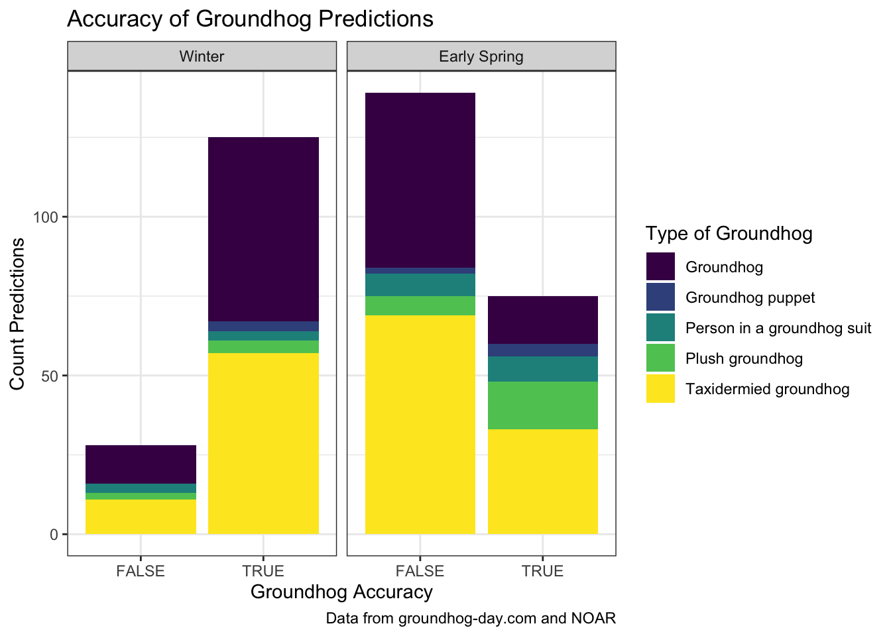

Rows: 75 Columns: 17
── Column specification ────────────────────────────────────────────────────────
Delimiter: ","
chr (11): slug, shortname, name, city, region, country, source, current_pred...
dbl (4): id, latitude, longitude, predictions_count
lgl (2): is_groundhog, active
ℹ Use `spec()` to retrieve the full column specification for this data.
ℹ Specify the column types or set `show_col_types = FALSE` to quiet this message.
Rows: 1462 Columns: 4
── Column specification ────────────────────────────────────────────────────────
Delimiter: ","
chr (1): details
dbl (2): id, year
lgl (1): shadow
ℹ Use `spec()` to retrieve the full column specification for this data.
ℹ Specify the column types or set `show_col_types = FALSE` to quiet this message.
── Column specification ────────────────────────────────────────────────────────
Delimiter: ","
chr (11): slug, shortname, name, city, region, country, source, current_pred...
dbl (4): id, latitude, longitude, predictions_count
lgl (2): is_groundhog, active
ℹ Use `spec()` to retrieve the full column specification for this data.
ℹ Specify the column types or set `show_col_types = FALSE` to quiet this message.
Rows: 1462 Columns: 4
── Column specification ────────────────────────────────────────────────────────
Delimiter: ","
chr (1): details
dbl (2): id, year
lgl (1): shadow
ℹ Use `spec()` to retrieve the full column specification for this data.
ℹ Specify the column types or set `show_col_types = FALSE` to quiet this message.
# Read Weather Data library(readr)Actual_weather <-read_csv("../../data/data.csv", skip =3)
Rows: 130 Columns: 2
── Column specification ────────────────────────────────────────────────────────
Delimiter: ","
dbl (2): Date, Value
ℹ Use `spec()` to retrieve the full column specification for this data.
ℹ Specify the column types or set `show_col_types = FALSE` to quiet this message.
ggplot(groundhogs_final, aes(x = accuracy, fill = type)) +geom_bar()+scale_fill_manual("Type of Groundhog", values =viridis(5)) +labs(x ="Groundhog Accuracy", y ="Count Predictions", title ="Accuracy of Groundhog Predictions", caption ="Data from groundhog-day.com and NOAR", alt ="Bar Graph of ground hog prediction acuracy by type of goundhog. Groundhogs are more accurate than not, but not by much") +theme_bw()
ggplot(groundhogs_final, aes(x = type, fill = accuracy)) +geom_bar(position ="fill", color ="white")+scale_fill_manual("Groundhog Accuracy", values =viridis(2)) +labs(x ="Type of Groundhog", y ="Percent of Predictions", title ="Proportion of Acurate Groundhog Predictions by Type", caption ="Data from groundhog-day.com and NOAR") +theme_bw() +theme(axis.text.x =element_text(angle =15, hjust =1) )

ggplot(groundhogs_final, aes(x = year, y = Value, color = accuracy)) +geom_point() +scale_color_manual("Groundhog Accuracy", values =viridis(2)) +labs(x ="Year of Prediction", y ="Average Temperature", title ="Prediction Acuracy by Temperature Over Time", caption ="Data from groundhog-day.com and NOAR") +theme_bw()
D Map of Groundhogs in Pennsylvania
library(mosaic)
Registered S3 method overwritten by 'mosaic':
method from
fortify.SpatialPolygonsDataFrame ggplot2
The 'mosaic' package masks several functions from core packages in order to add
additional features. The original behavior of these functions should not be affected by this.
Attaching package: 'mosaic'
The following object is masked from 'package:Matrix':
mean
The following objects are masked from 'package:dplyr':
count, do, tally
The following object is masked from 'package:purrr':
cross
The following object is masked from 'package:ggplot2':
stat
The following objects are masked from 'package:stats':
binom.test, cor, cor.test, cov, fivenum, IQR, median, prop.test,
quantile, sd, t.test, var
The following objects are masked from 'package:base':
max, mean, min, prod, range, sample, sum